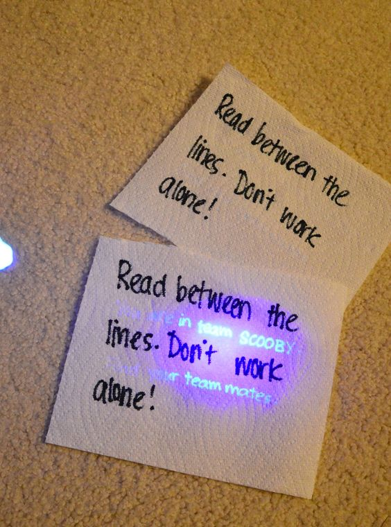
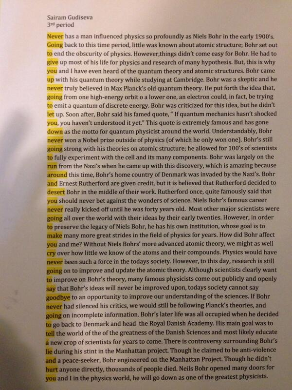

Hiding In Plain Sight
Fun With Steganography
What Is This Talk
A mostly silly guide to hiding information
Who Am I?
Chris Karper
Platform Architect @ Under Armour
Steganography
Steganos (στεγανός) - Concealed, Protected
Graphein (γράφειν)- Writing
Steganography !== Cryptography
Cryptography
Encoding information, requiring a key to recover
 Credit:
Credit:

Steganography
Concealed information, hidden within unrelated information
Steganography
+
Cryptography
Hidden, secured information

Where have we seen this?
Writing notes with lemon juice or disappearing ink
Red glasses hidden messages
Hidden Rick Rolls in academic work

Credit:
Sairam Gudiseva
What does that have to do with us?
Hide Data In Images
Place small amounts of data inside image and video files
Least Significant Bits
Human perception is coarse,
let's take advantage!
BUT...
there's a limited capacity.
f5stegojs
https://www.npmjs.com/package/f5stegojs
JPEG steganography for browser and node
Source Image
Embed text
"I should buy a boat"Code Sample
import fs from 'fs'; import f5 from 'f5stegojs'; // Initialize F5 Stego const shuffleKey = [0x8, 0x6, 0x7, 0x5, 0x3, 0x0, 0x9, 0xe, 0x9]; const stegger = new f5(shuffleKey); // Load working buffers const outer = fs.readFileSync('relaxed-cat.jpg'); const inner = Buffer.from('I should buy a boat', 'utf8'); // Perform steganographic embed const embedded = stegger.embed(outer, inner); // Write output fs.writeFileSync('embedded.jpg');
Resultant Image
Comparison
Now What?
Go play!
With This Great Power...
Comes No Responsibility
Thank You
Chris Karper